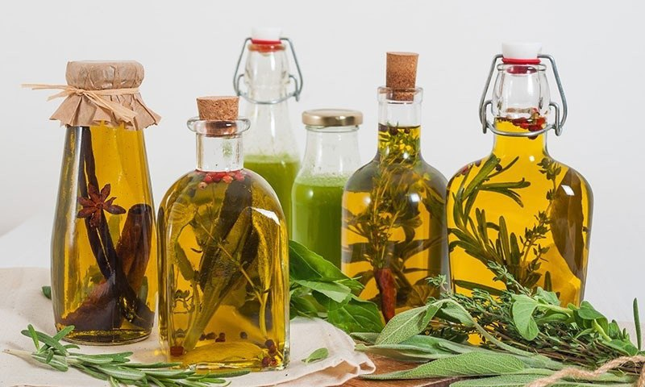

Напитки на основе настоек и бальзамов.

Бальзамы и настойки широко используются в приготовлении различных напитков, в частности пуншей, морсов.
Их вы не только можете сделать для своих домашних, но также использовать в качестве праздничных коктейлей для гостей.
НАПИТОК-АПЕРИТИВ «ПРАЗДНИЧНЫЙ»
Требуется: 2/4 стакана водки, 1/4 стакана абрикосового ликера, 1/4 стакана сухого белого вермута, 2–3 капли любого бальзама.
Способ приготовления. Смешайте все компоненты в шейкере или миксере. Подавайте в мадерной рюмке без льда.
ВОДКА «ОЛД-ФЭШЕНД»
Требуется: 20 мл водки, 1 кусок быстрорастворимого сахара, 2–3 капли бальзама, 1 ч. л. нарзана, долька апельсина, цедра 1 лимона, лед.
Способ приготовления. На дно стакана положите кусок сахара, затем добавьте бальзам, нарзан и все перемешайте. Потом вылейте водку. Положите в стакан 2–3 кубика льда и тщательно перемешивайте ложкой до полного растворения сахара. Выжимайте и кладите в коктейль кусочек цедры лимона. Украсьте долькой апельсина и вишней.
НАПИТОК «ГОЛДЕН РОУЗ»
Требуется: 2/3 коньяка, 1/3 красного десертного вермута, 2–3 капли любого бальзама, 1–2 ягоды вишни.
Способ приготовления. Смешайте все компоненты в миксере. Подавайте без льда. Украсьте вишней.
НАПИТОК «ЛЕДИ ДИАНА»
Требуется: 1/2 сухого белого вина, 1/2 сухого красного вина, 2–3 капли бальзама, цедра апельсина.
Способ приготовления. Смешайте все компоненты в миксере и перелейте в высокий узкий бокал, украсив его край цедрой апельсина.
НАПИТОК «САЛЮТ»
Требуется: 1/2 водки, 1/2 настойки «Русский сувенир», лимонная цедра.
Способ приготовления. Смешайте все компоненты в миксере, перелейте в высокий узкий бокал. Подавайте без льда, выжмите и опустите в напиток кусочек лимонной кожицы.
НАПИТОК «ЛИМОННЫЙ»
Требуется: 2/3 лимонной настойки, 1/3 сухого хереса.
Способ приготовления. Смешайте все компоненты в миксере и перелейте в высокие узкие бокалы.
НАПИТКИ-ДИДЖЕСТИВЫ
Эти напитки способствуют пищеварению, помогают избавиться от ощущения изжоги после обильного принятия пищи.
НАПИТОК «ПОЛНОЧНАЯ ЖАРА»
Требуется: 2/5 «Лимонной» настойки, 2/5 сухого белого вермута, 1/5 сахарного сиропа, лимонная цедра.
Способ приготовления. Смешайте в миксере все компоненты и перелейте в высокий узкий бокал, украсьте тертой лимонной цедрой.
НАПИТОК «ГАМЛЕТ»
Требуется: 3/4 настойки зверобоя, 1/4 лимонного сока, 2 ч. л. малинового сиропа, лимонная цедра.
Способ приготовления. Смешайте в миксере все компоненты, перелейте в высокий бокал, украсьте лимонной цедрой.
НАПИТОК «ЦУНАМИ»
Требуется: 2/4 настойки «Горилка с перцем», 1/4 томатного сока, 1/4 лимонного сока, соль.
Способ приготовления. Смешайте все компоненты миксером и перелейте в высокий бокал.